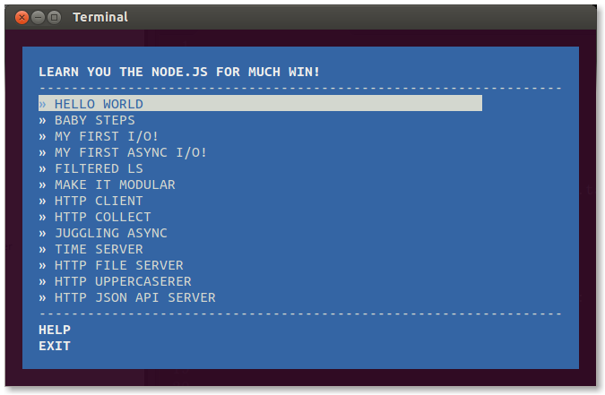

Learn You The Node.js For Much Win
Workshop
# Install with:
$ sudo npm install learnyounode -g
# Or:
$ curl http://192.168.88.250/learnyounode.tar.gz \
| tar zxvf -
$ cd learnyounode
$ sudo npm link
# Then:
$ learnyounode -v
# Should print "learnyounode@0.1.0". Then:
$ cd; mkdir learnmenode; cd learnmenode
$ learnyounode

HELLO WORLD
console.log("HELLO WORLD")
BABY STEPS
var result = 0
for (var i = 2; i < process.argv.length; i++)
result += Number(process.argv[i])
console.log(result)
MY FIRST I/O!
var fs = require('fs')
var contents = fs.readFileSync(process.argv[2])
var lines = contents.toString().split('\n').length
console.log(lines)
// note you can avoid the .toString() by passing 'utf8'
// as the second argument to readFileSync, then you'll
// get a String!
//
// fs.readFileSync(process.argv[2], 'utf8')
// .split('\n').length
MY FIRST ASYNC I/O!
var fs = require('fs')
var file = process.argv[2]
fs.readFile(file, function (err, contents) {
var lines = contents.toString().split('\n').length
console.log(lines)
})
FILTERED LS
var fs = require('fs')
var regex = new RegExp('\\.' + process.argv[3] + '\n')
fs.readdir(process.argv[2], function (err, list) {
list.forEach(function (file) {
if (regex.test(file))
console.log(file)
})
})
Note: the '\n' above should be '$' but my markdown renderer is having a bad day
MAKE IT MODULAR
var filterFn = require('./solution_filter.js')
var dir = process.argv[2]
var filterStr = process.argv[3]
filterFn(dir, filterStr, function (err, list) {
if (err)
return console.error('There was an error:', err)
list.forEach(function (file) {
console.log(file)
})
})
HTTP CLIENT
var http = require('http')
http.get(process.argv[2], function (request) {
request.setEncoding('utf8')
request.on('data', console.log)
request.on('error', console.error)
})
HTTP COLLECT
var http = require('http')
var bl = require('bl')
http.get(process.argv[2], function (request) {
request.pipe(bl(function (err, data) {
if (err)
return console.error(data)
data = data.toString()
console.log(data.length)
console.log(data)
}))
})
JUGGLING ASYNC
var http = require('http')
var bl = require('bl')
var results = [], count = 0
function printResults () {
for (var i = 0; i < 3; i++) console.log(results[i])
}
function httpGet (index) {
http.get(process.argv[2 + index], function (request) {
request.pipe(bl(function (err, data) {
if (err) return console.error(data)
results[index] = data.toString()
count++
if (count == 3) printResults()
}))
})
}
for (var i = 0; i < 3; i++) httpGet(i)
TIME SERVER
var net = require('net')
function zero(i) {
return (i < 10 ? '0' : '') + i
}
function now () {
var d = new Date()
return d.getFullYear() + '-' + zero(d.getMonth()) + '-'
+ zero(d.getDay()) + ' ' + zero(d.getHours()) + ':'
+ zero(d.getMinutes())
}
var server = net.createServer(function (socket) {
socket.end(now() + '\n')
}).listen(8000)
HTTP FILE SERVER
var http = require('http')
var fs = require('fs')
var server = http.createServer(function (req, res) {
fs.createReadStream(process.argv[2]).pipe(res)
})
server.listen(8000)
HTTP UPPERCASERER
var http = require('http')
var map = require('through2-map')
var server = http.createServer(function (req, res) {
if (req.method != 'POST')
return res.end('send me a POST\n')
req.pipe(map(function (chunk) {
return chunk.toString().toUpperCase()
})).pipe(res)
})
server.listen(8001)
HTTP JSON API SERVER
var http = require('http')
var url = require('url')
function parsetime (time) {
return { hour: time.getHours(), minute: time.getMinutes(),
second: time.getSeconds() }
}
function unixtime (time) { return { unixtime : time.getTime() } }
http.createServer(function (req, res) {
var parsedUrl = url.parse(req.url, true)
var time = new Date(parsedUrl.query.iso)
var result
if (/^\/api\/parsetime/.test(req.url))
result = parsetime(time, res)
else if (/^\/api\/unixtime/.test(req.url))
result = unixtime(time, res)
if (result) {
res.writeHead(200, { 'Content-Type': 'application/json' })
return res.end(JSON.stringify(result))
}
res.writeHead(404)
res.end()
}).listen(8001)